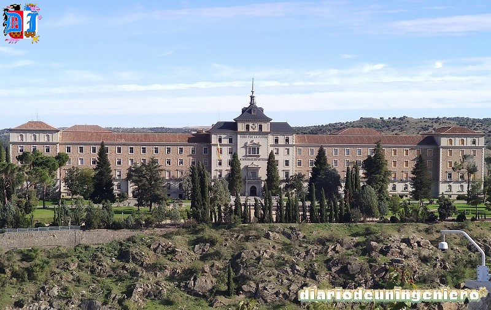
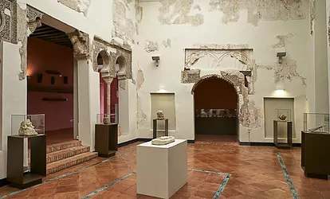
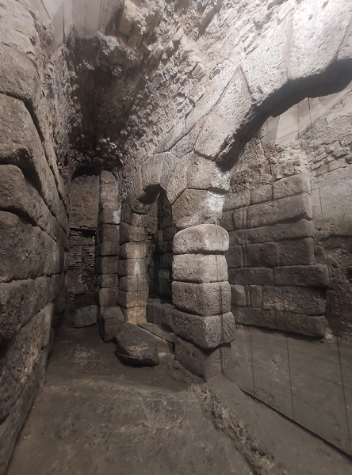
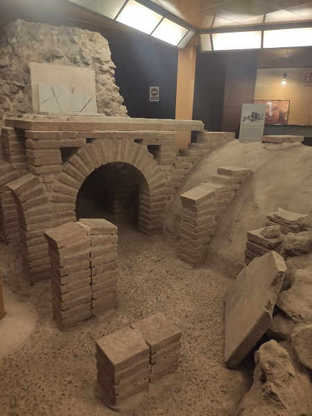
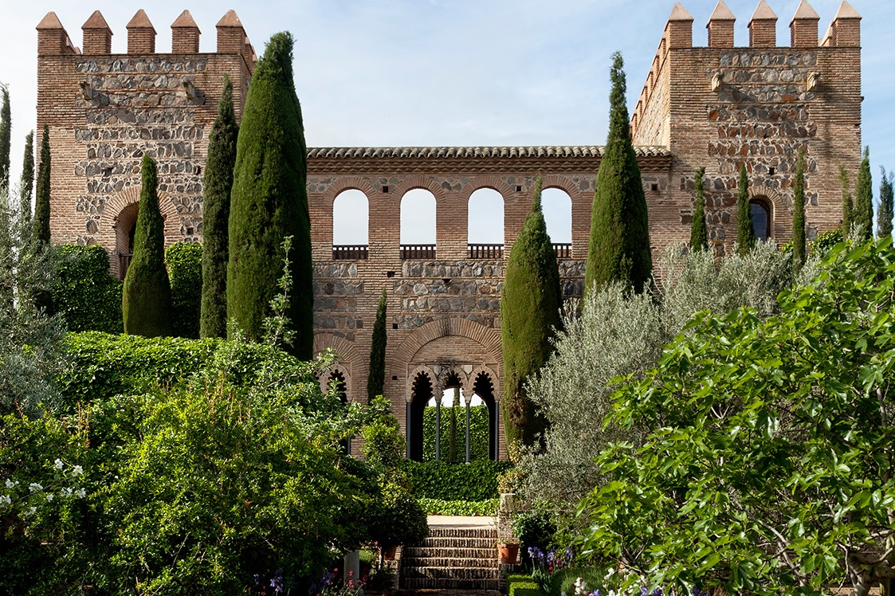

Toledo es la ciudad más bella de España.
Es el más rico florón de su corona.
Es el relicario donde se guarda la gloria del pasado.
Es el joyel más repleto de maravillas de Arte, de Historia, de Tradición, de Leyenda...
Es la ciudad museo por excelencia.
Cada piedra de sus muros lleva escrito el recuerdo de una epopeya.
Cada uno de los rincones de sus calles torcidas dicen más leyendas gratas al corazón.
Cada casona es un hogar de historia.
Cada convento un nido de misticismo y poesía...
Si contempláis Toledo desde lejos, lo veréis de color ocre dorado, como si para hacerla más bella todavía se hubiesen concertado el polvo de los siglos y el oro del sol...
Se ven las torres de una ciudad milenaria, donde antaño convivían gentes de diferentes culturas y religiones. Y brillan entre la ciudad dos edificios, la catedral de Toledo, una joya de la arquitectura cristiana y el Alcazar, construido sobre la antigua Alcazaba árabe, del cual hoy quedan los cimientos.
Entre tanto, las aguas del río Tajo, siguiendo la ruta aparente del sol, rodean, casi del todo, a la ciudad maravillosa, en eterno abrazo de amor.
Y siempre, esas aguas que aprendieron nobleza en su cuna de Aragón, van a decir las glorias de Toledo al Atlántico mar.
From "Un día en Toledo" de P.Riera Vidal.
To enter Toledo we must cross one of the majestic bridges or one of the gates that it has since it is largely separated by the Tagus River and flanked by an extensive wall that has beautiful gates. Doors that have been crossed by heroes of the past, whether they were Muslims or Christians and by kings of what was the germ of today's Spain, such as Alfonso VI or Carlos V. In the figure on the right we can see different doors such as the Puerta de Bisagra, Puerta del Sol, Puerta de Valmardon or Puerta del Cambrón .
That is why most of the doors have a Mudejar architecture halfway between the Christian and the Muslim. Except for some doors like the one in Bisagra, the old Muslim door would be destroyed and in its place the Greco-Roman architecture would appear. As well as the Alcántara bridge that after being destroyed by a flood more than 500 years ago would be quickly rebuilt but with a style more than the 15th century. It is of Roman origin and one of the arches say so, speaking of the emperor Trajan who had the greatest dominance of the Roman empire and who happened to be born in Hispania. Next to the bridge is the Roman temple of Alcántara.
On the outskirts of this bridge is the Castillo de San Servando , which overlooks the Alcazar or formerly the Arab Alcazaba. Place of resistance among Christians before the conquest of Toledo in 1085 and that later would have a defensive role.
On the other side of the river is the San Martín bridge that can be seen in the drop-down of images after the Alcántara bridge.
Another of the outstanding monuments outside the city center is the Tavera hospital , which is dedicated to Saint John the Baptist and served as a pantheon for Cardinal Tavera and his companions.
Because it was outside the old town it was called "the hospital outside" . Currently, the Historical Archive of the Nobility is located within it, which from time to time holds temporary exhibitions in some of its rooms. The highlight is the double patio that it has within the Plateresque style since it was supervised by Alonso Covarrubias, Carlos V's architect who greatly influenced the architecture of Toledo since the time of maximum splendor is with Carlos V who established the capital of the kingdom and empire and had the best painters and artists work in Toledo.
The Alcázar is the building with the oldest origin in Toledo next to the Alcantara bridge. It was a Roman palace in the 3rd century when it was built. Later in times of the Visigoths it would be used as a royal residence. Later, with the arrival of the Arabs, the exterior and interiors would be transformed, becoming an Arab residence with a defensive character.
After the taking of the city in 1085 under the reign of Alfonso VI it would be restored and expanded. It would be transformed by subsequent kings and later the towers would be built in its corners, although there was a stronger fortification on the outer walls in the Arab period.
With Carlos V it would already reach the aspect much closer to what it looks today since the front and rear facades would be changed by the architect Covarrubias and Juan de Herrera and the imperial coat of arms of Carlos V was embedded in its facade. In addition, the interior patio was changed and the stairway to the patio was built, which are emblems of the palace.
During the Civil War it would suffer the first fire and during the French occupation the second in which the interior of the palace would be destroyed.
After being restored in the 19th century, Elizabeth II would cede the fortress to the infantry college, giving it the military character that it would have during almost the entire 20th century. for
The rooms that would stand out would be the Royal Chamber that can be seen in one of the images, the Hall of honor and the Mudejar Hall.
During the civil war it would be destroyed by the republican troops after the unsuccessful siege of the fortress that would become the symbol of victory for the national side and that would mark an important change in the face of the taking of Madrid.
After the war it would be restored and turned into a museum in Toledo. This museum had a character focused mainly on the Alcázar and the infantry academy. This would be modified after the restoration of the fortress in 2009 in which the pieces of the military museum of Madrid would be transferred and it would truly become a military museum that also focuses on the history of the Spanish state. Furthermore, the 20th century becomes anecdotal, with most of it until the civil war, where only a couple of rooms show the war, the Franco dictatorship and the reign of Juan Carlos.
In addition, this restoration would be very important to discover the foundations of the old Arab fortress and the walls of the palace. In addition to appearing intact one of the entrance doors of this period.
The alcazar also has an advantageous view of the army academy whose image I show below.

The museum is presented on
It has four patios and stairs that remind many others of the same style as those of the Mendoza palace in Guadalajara. This is also due to the fact that the hospital was founded by Cardinal Mendoza and bears his coat of arms. Let us remember that the Mendoza are the Dukes of Infantado and in the 16th century they were one of the richest noble families in Spain. This wealth is due to the favors they gave to the kings in the reconquest and in the uprisings of the commoners who took their part.
The museum traces history from the 16th century which is from the year it was built focusing on the Habsburgs, and includes works from that period. The most notable works are those of El Greco, especially the Immaculate Conception that is in a chapel dedicated to it.
In addition there are objects found in Toledo from many different eras and also objects from the churches or the cathedral.
Toledo is full of houses that belonged to important people in their time. The most attractive and most visited palace is the Royal College of Noble Maidens . This building was built in the time of Felipe II, and the house originally belonged to Diego Hurtado de Mendoza, son of Cardinal Mendoza, brother of the Duke of Infantado, both from Guadalajara. This cardinal was one of the most important men in Spain in the 16th century and proof of this is that his remains are found in the main chapel of the Toledo Cathedral. This palace that has a very large chapel and church. In addition, the rectory room has a beautiful wooden coffered ceiling together with Flemish tapestries of the time. It also has important paintings of the time. The building apart from the church consists of a large patio and from its two towers you can see the cathedral from quite close. These views are almost unique, as it is the highest point such a short distance from the high tower of the cathedral.
Another of the most notable buildings is La Casa del Greco which houses several of his works. In reality, the house is not exactly that of El Greco, but it recreates a house from the time that could have been his house. It has typical elements such as a Toledo patio with a lot of tradition, a kitchen and a bedroom from that time. His house was just 100 meters above which there is a statue in his name. In the house we can find some very important rooms such as a chapter house, since this house belonged to a nobleman close to El Greco. And two of his most important works.
Others of the houses of important people have been lost in their entirety, either by the passage of property between different families or by their destruction. As an example we have the house of Garcilaso de la Vega that was identified 15 years ago through elements that said documents of the time and that it was very close to the church of San Román.
Of the most important civil buildings we can mention the City Hall, which I show below, the episcopal palace next to the city hall and the cathedral, the palace that houses the Toledo council, the Fuensalida palace , seat of the government of the Community of Castilla La Mancha and the convent of San Gil which despite being of religious origin today houses the Courts of Castilla La Mancha. In the image below we can see what the current town hall looks like.

Además tenemos otro edificio singular como es la casa del temple que tiene su origen en los siglos XI y XII. Siendo su arquitectura arabesca. Su nombre se debe a que el edificio fue propiedad de la orden de los templarios y fue utilizado como posada en el siglo XIV. El elemento principal es el salón que es del siglo X.
In the next blog thread I will go on to describe religious architecture and also non-religious architecture that has to do with the Christian, Muslim and Jewish cultures that coexisted in Toledo.


In addition to these buildings we can find Roman ruins, which have been discovered and cataloged in recent years. Proof of this are the Cave of Hercules , a building that has been excavated and foundations have been found from the Arabs to the Romans. It could serve as a hiding place for different cultures after the Arab occupation and later the Christian reconquest.
Remains of what were Roman baths have also been found, very close to the caves of Hercules, and the fact is that the Roman Toledo was much smaller than the current old town, being concentrated around the alcazar.
From the Roman period, in addition to the baths, it has other infrastructures, many in ruins that have been unnoticed for years. Among them would be the Roman Circus, the Aqueduct , which can only be seen in part next to the river, next to the Alcantara bridge, the Roman villa which is located where the arms factory in La Vega and that its remains from the excavations can be seen in the Santa Cruz museum, including two floors and the Roman Amphitheater that is located in the Covachuelas neighborhood, in the area of Tavera Hospital. Currently, after the emergence of new remains and caves, what is going to happen to that space is in the air.
Precisely in this part of the city, La Vega Baja, there is an agreement to rehabilitate the area of the Roman circus that is already delimited, in the northwest of the city, next to La Vega. This agreement between the three administrations will lay the foundations for a new protection system for the three Sites of Cultural Interest: Vega Baja, Circo Romano and Cristo de la Vega, and will create what will be called the 'Site of the Vega Baja 'recovering the excavated areas and landscaping various areas of the environment . In the Vega Baja, in addition to Roman remains, there are many Visigoth remains, where it is thought that the nucleus of the city was, unlike the Romans in which the urban nucleus was near the river where the fortress is today, the Visigoths built many houses in La Vega. The project is called Toledo Visigodo .
 Como remate final a los edificios menos conocidos de Toledo esta el palacio de Galiana que ha sido restaurado también en los últimos años.
The restored building that is presented is what has survived from the almunia or recreation palace built by the king of the Taifa of Toledo Al Mamún in the 11th century.
The Galiana Palace is a Mudejar tower with a rectangular floor plan built in Toledo masonry and brick. Its ground floor has a reception room with alcoves on each side that repeats Byzantine patterns, a square with four central columns that form nine vaulted spaces in height.
© 2016 - All Rights Reserved - Diseñada por Sergio López Martínez
El sitio se mantiene gracias a la publicidad, por favor Desactiva Adblock para seguir navegando
He desactivado Adblock![[Valid RSS]](https://www.onepointsync.com/wp-content/uploads/2016/08/valid-rss-rogers.png "Validate my RSS feed")